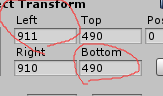
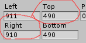
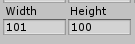
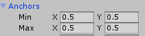

GetComponent<RectTransform>().offsetMax = new Vector2(left, top);offsetMax是一个Vector2类型
offsetMax.x即为RectTransform中的Left
offsetMax.y即为RectTransform中的Buttom

GetComponent<RectTransform>().offsetMin = new Vector2(right, bottom);offsetMin是一个Vector2类型
offsetMin.x即为RectTransform中的Right
offsetMin.y即为RectTransform中的Botttom

GetComponent<RectTransform>().sizeDelta = new Vector2(width, height);sizeDelta是一个Vector2类型
sizeDelta.x即为RectTransform中的width
sizeDelta.y即为RectTransform中的height

GetComponent<RectTransform>().anchoredPosition3D = new Vector3(posx,posy,posz);
//修改位置
GetComponent<RectTransform>().anchoredPosition = new Vector2(posx,posy);//修改Pivot位置GetComponent<RectTransform>().anchorMin = new Vector2(0, 1);
GetComponent<RectTransform>().anchorMax = new Vector2(0, 1);
作者：Ligo丶
出处：https://www.cnblogs.com/Ligo-Z/
本文版权归作者和博客园共有，欢迎转载，但必须给出原文链接，并保留此段声明，否则保留追究法律责任的权利。